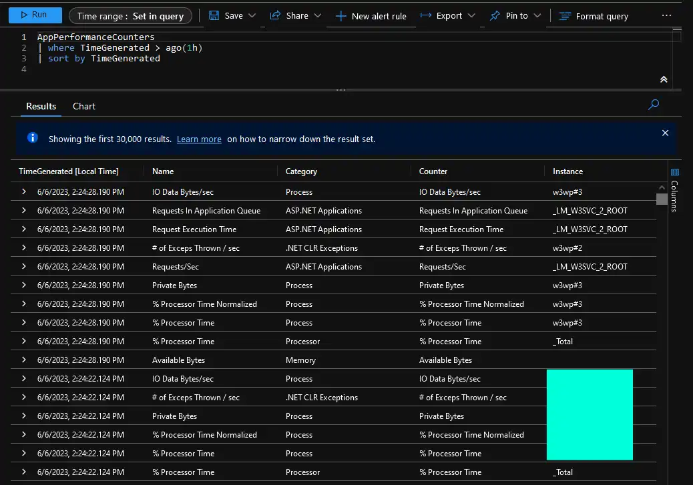

Resolving Application Insights Performance Counters Collection Issue for .NET Applications
If you’re using Application Insights SDK in your .NET applications and you want to gather performance counters like disk, memory or CPU usage, you have two main approaches that you can follow:
-
EventCounters: this is a future-proof, cross-platform alternative to classic performance counters that natively supports collection of system and custom counters both from .NET Framework and .NET (Core) applications. I will share more about EventCounters and how you can use these in a subsequent blog post, therefore EventCounters are out of scope for this blog post.
-
PerformanceCounters: classic way to collect performance counters for applications that are only running on Windows. PerformanceCounters support wider variety of counters for .NET Framework and a limited subset of counters for .NET (Core).
In this blog post I will talk about potential issues that may arise during configuration of classic performance counters for Application Insights and how you can resolve that issue. Let’s dive in!😺
Depending on how your servers and applications are configured you may be experiencing following error message in Application Insights related to performance counters collection for IIS-hosted applications: AI: Error collecting X of the configured performance counters. Please check the configuration.
This may happen if application pool service accounts are not added to Performance Monitor Users group, which is a pre-requisite mentioned here: System performance counters in Application Insights.
For a specific counter you may see a message saying Access to the registry key 'Global' is denied., which also points to the fact that you may be affected by the lacking group member issue.
What the above article doesn’t mention though is that net localgroup will not work if your application pool service account name is longer than 20 characters or that you need to perform an IISRESET once the accounts are added to the local security group. In addition you probably wouldn’t want to manually retrieve every single application pool service account name and run this command manually on every server for every account😮💨
Since I love automating things and minimizing amount of manual steps I have created a PowerShell script that would do all the necessary steps for you:
-
Retrieve all active application pool names and filter out the ones you don’t want to add to the local security group (configurable);
-
Generate application pool service account names based on chosen application pool names;
-
Add application pool service account names to the provided local security group;
-
Perform
IISRESETonce all the service accounts are successfully added to the group;
This script uses PowerShell’s Add-LocalGroupMember command instead of net localgroup to add respective accounts to the local security group.
You can find the script in my GitHub repository: Add-AppPools-To-Group.ps1
Once it’s done, you should be able to see performance counters for your applications both in Live Metrics view of Application Insights and by querying AppPerformanceCounters table directly in the respective Log Analytics workspace.

That’s it from me this time, thanks for checking in!💖
If this article was helpful, I’d love to hear about it! You can reach out to me on LinkedIn, Twitter, GitHub or by using the contact form on this page.😺
Stay secure, stay safe.
Till we connect again!😻